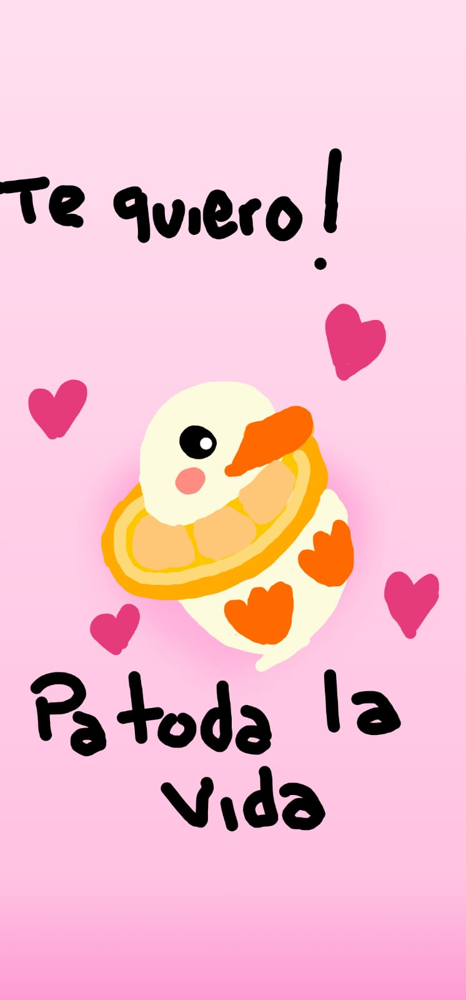

Lo Inenarrable

Lo Inenarrable es pensar en la ausencia de tus ojos. En lo esquivo del brillo de tus mejillas. En la curvatura de tu sonrisa. Lo Inenarrable es creer en el sol matutino sin tu despertar.
Y en la brisa nocturna sin tus sueños más profundos. Iluso el que piensa en la soledad en tu presencia. Cobarde el que huye de tus pasos. La clase más imprescindible es la que cuenta tu historia, y el proyecto más interesante es el que la escribe. Lo inenarrable es no desear que tus brazos apunten hacia mi torso, ni que tu boca no se extienda de par en par frente a la mía. ¿Pecaré de ambicioso sí me atrevo a pedir que pienses en mi? No me atrevería a querer invadir. Ya he ofendido demasiado pisando tu sueño. Es mucho más de lo que soy digno de solicitar. Y aun así, con temor al castigo me atrevo a decir que lo inenarrable es no suplicar por una vida entera contigo formar.